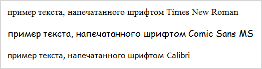
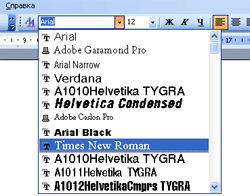
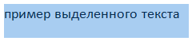
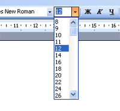
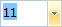

Шрифт и размер в Microsoft Word
Текст, который мы печатаем в программе Word, может выглядеть по-разному. Разный вид и размер букв, толщина, начертание, цвет, положение на странице. Причем, всё это можно изменить уже после того, как документ напечатан. И многие так и поступают – это и проще, и быстрее, и удобнее.
Шрифт — это то, как напечатаны слова, их внешний вид.
В мире существует очень много шрифтов. Некоторые из них уже встроены в систему Windows, другие же можно добавить. Например, скачать из интернета и установить на компьютер.
Шрифтов-то, конечно, много, но не все они будут работать - большинством нельзя набрать русские буквы, только английские.
Как выбрать шрифт
Для настройки вида букв в программе Microsoft Word есть специальное поле. Находится оно в верхней части с левой стороны.
В конце этого поля есть небольшая кнопка со стрелкой. Если вы нажмете на нее, откроется список шрифтов, установленных на ПК.
Их довольно много. Чтобы в этом убедиться, можно покрутить колесико на мышке или потянуть вниз ползунок с правой стороны. Выбрав название из списка, все буквы, цифры и знаки будут печататься именно этим видом.
Как изменить шрифт набранного текста
Даже если документ уже набран каким-то видом шрифта, его всегда можно поменять. Но для этого текст необходимо предварительно выделить.
Рассмотрим на примере. Напечатайте пару предложений. Обратите внимание: буквы будут набираться тем видом, которой показан в поле со шрифтами в данный момент. В моем случае это Calibri.
Чтобы изменить этот вид, текст нужно выделить. Для этого наведите курсор (стрелку или палочку) в самое начало или в самый конец текста. Затем нажмите левую кнопку мыши и, не отпуская ее, тяните в другой конец. Когда слова закрасятся серым или синим цветом, это будет означать, что они выделены.
Теперь осталось настроить шрифт. Нажмите на маленькую стрелку в конце поля с названием текущего вида. Откроется список, из которого выберите нужный.
Вид букв должен поменяться. Если этого не произошло, значит, вы выбрали неподходящий тип – тот, который не работает с русским языком.
На заметку. Шрифт, которым принято печатать документы, называется Times New Roman.
Как изменить размер шрифта
Размер шрифта – это размер букв, цифр и знаков в напечатанном тексте.
Зачастую он маловат – сложно читать, приходится всматриваться, пододвигаться ближе к экрану. В таких случаях имеет смысл увеличить его.
Для изменения размера есть специальное поле. В этом поле указано то значение, которое установлено в данный момент.
Его можно увеличить или уменьшить. Для этого нужно кликнуть по маленькой стрелке в конце поля. Откроется список. Нажмите на нужный размер – и все буквы, цифры и знаки будут им печататься.
Если предложенных размеров недостаточно, покрутите колесико на мышке или потяните за ползунок справа.
Размер букв можно настроить и другим образом. Выделите значение, которое установлено в данный момент. Для этого достаточно щелкнуть левой кнопкой мышки внутри поля - по цифрам. Цифры закрасятся другим цветом.
Затем напечатайте нужное значение и нажмите клавишу Enter на клавиатуре.
Чтобы изменить размер уже набранного текста, сначала его нужно выделить. Для этого наведите курсор (стрелку или палочку) в самое его начало или в самый конец. Затем нажмите левую кнопку мыши и, не отпуская ее, тяните в другой конец, пока все слова не закрасятся.
Теперь осталось изменить размер. Для этого нужно щелкнуть по маленькой кнопке рядом с текущим значением и выбрать нужное. Также можно просто удалить это значение, напечатать нужное и нажать клавишу Enter на клавиатуре.
Стоит отметить, что текст принято печатать 14 или 12-ым размером, а заголовки – 16-ым.